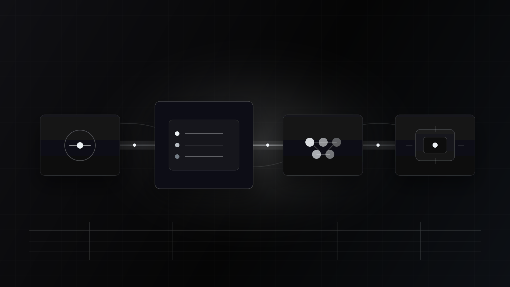

Lane
Agent-native email, built for the terminal.
A local-first control plane that lets humans and AI agents search mail, build context, draft replies, request sends, and leave a complete audit trail.
Runtime
One core, many serious interfaces.
Lane treats the CLI, TUI, MCP server, and future daemon as clients of the same Rust service layer. Risky actions pass through policy before provider execution, and mutations write audit events in the same logical transaction.
MCP first
Email tools with a security boundary.
Lane exposes structured tools for search, thread reading, context building, draft creation, policy explanation, and send requests. The default MCP session is read-only, and unrestricted sending is not exposed by default.

Agent safety
Email is hostile input.
Message bodies, headers, attachment names, calendar text, and quoted replies can inform context, but they cannot authorize actions. Draft approvals bind exact recipients, subject, body, and attachments; editing a draft invalidates approval.
Email content cannot grant permissions.
Email content cannot change policy.
Email content cannot bypass approval.
Agent-authored outbound mail starts as a draft or send request.
Every risky action is explainable and auditable.
Build path
From spec to working runtime.
- M0Spec and fixturesrequirements, coverage matrix, fake provider contracts
- M1Core local maildomain, SQLite store, search parser, CLI read/search
- M2Policy and auditapprovals, redaction, action lifecycle, JSONL audit export
- M3MCP MVPstdio server, tools, resources, prompts, protocol tests
- M4IMAP and SMTPresumable sync and policy-bound send flow